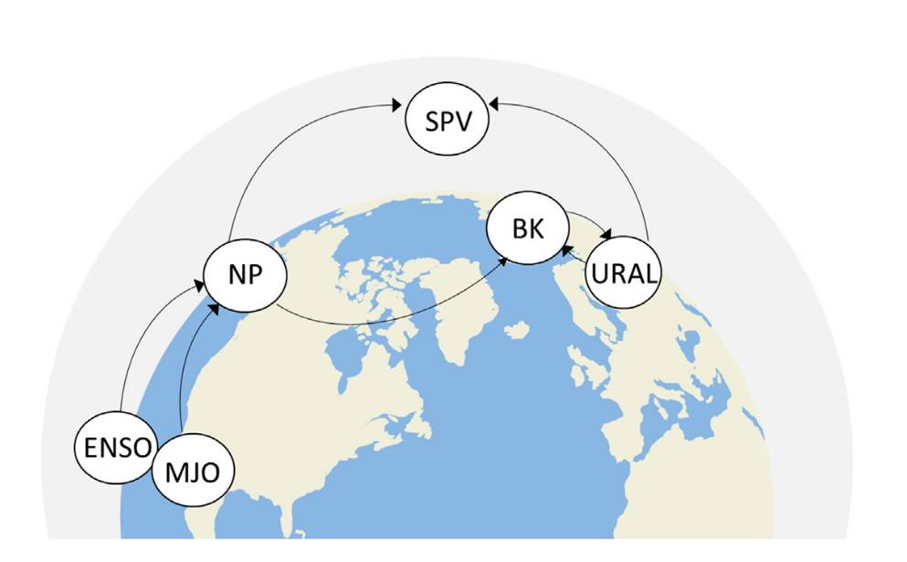
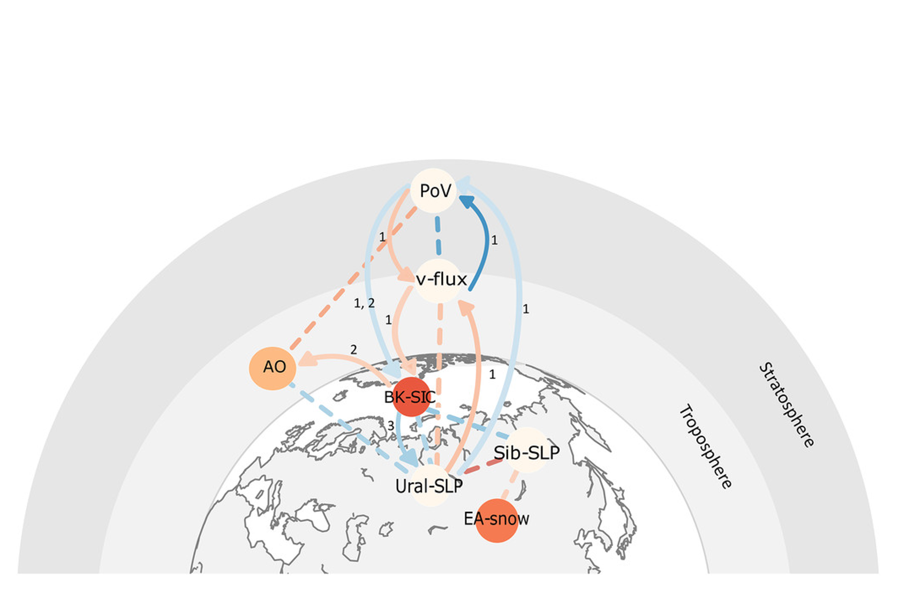
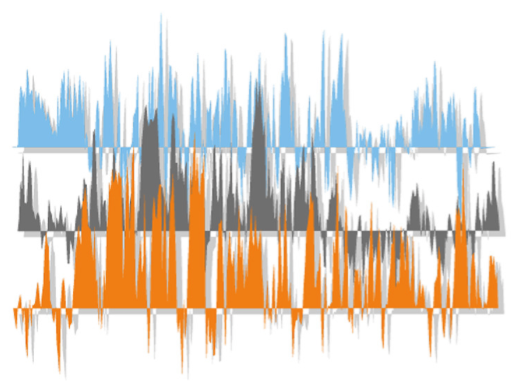
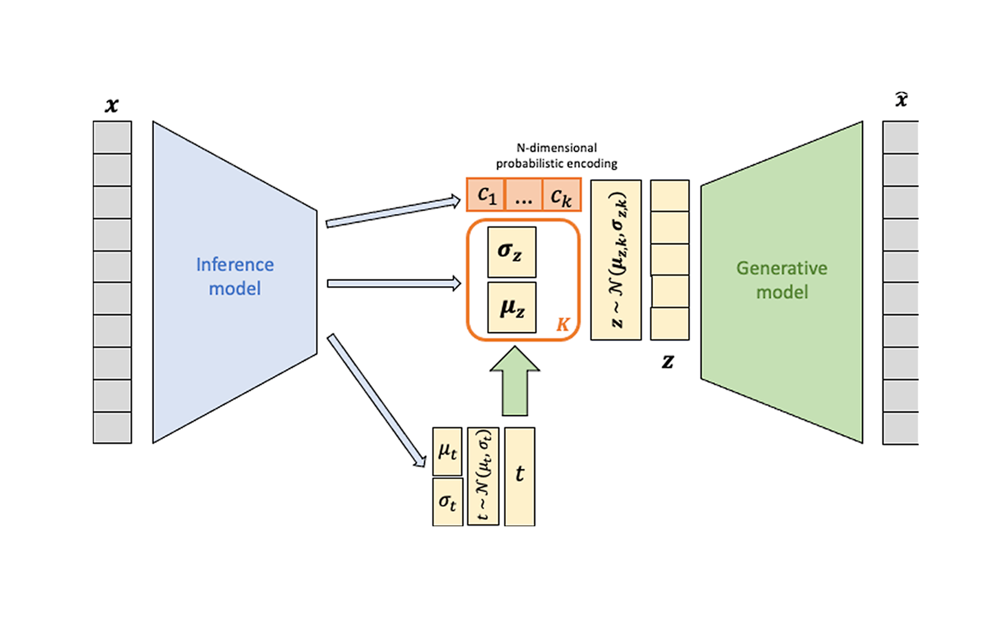
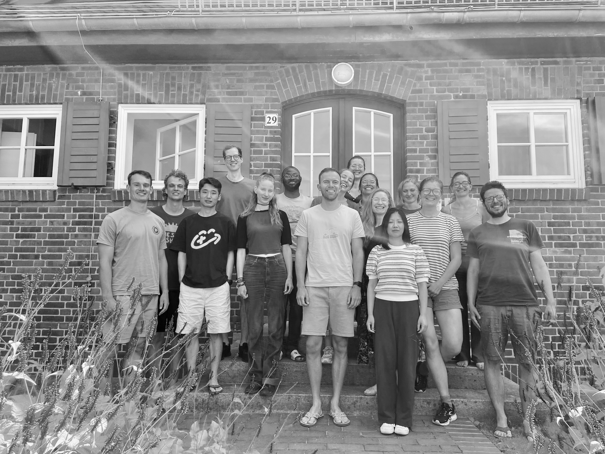

Climate Causality & Attribution
About
We are a group of climate scientists at Leipzig University in Germany. The motivation of our research is to explain and attribute climate risks, and to reduce uncertainties in regional predictions and projections of extreme weather and climate events. This effort requires an improved causal understanding of the physical drivers and consequences of extreme events. Our research includes several sub-aspects:
Research

Teleconnections and Regional Climate Change

Detection and Attribution

Causal Data Science

Extreme Weather and Climate Events

Machine Learning

Climate Impacts
Projects
Jun - Prof. Dr. Marlene Kretschmer
Jun - Prof. Dr. Sebastian Sippel
- CLIMXTREME: Climate Change and Extreme Events
- XAIDA: eXtreme events: Artificial Intelligence for Detection and Attribution
- AI4PEX: Artificial Intelligence for enhanced representation of processes and extremes in Earth System Models
- ECO-N: Economics of Connected Natural Commons
- Heinz Maier-Leibnitz Price of the DFG
People


Philine Lou Bommer
PhD Researcher

Dr. István
Dunkl
Post-Doc

Dr. Marina
Friedel
Post-Doc

Dr. Julia
Mindlin
Post-Doc

Dr. Julianna
Carvalho Oliveira
Post-Doc

Dr. Peter
Pfleiderer
Post-Doc

Jun.-Prof. Dr. Sebastian
Sippel
Junior Professor

Fiona
Spuler
PhD Researcher

Aurelia
Eberhard
Research Fellow

Jakob
Wessel
Post-Doc
Former Group Members
- Juliana Neild (Research Fellow, Climate Attribution)
- Sujata Kulkarni (visiting PhD researcher, Climate Causality)
- Johanna Beikert (Research Fellow, Climate Causality, Now at German weather service in Offenbach)
- Dr. Na Li (Postdoctoral researcher, Climate Attribution)
- Bjarne Biskamp (MA student, Climate Causality, now at UFZ Leipzig)
- Xuebang Liu (visiting PhD researcher, Climate Attribution)
- Nadine Theisen (MA student, Climate Attribution)
- Nelly Pomnitz (Research assistant, Climate Causality, now PhD student at Uni Leipzig)
Contact Us
Address
Climate Causality and Attribution Leipzig University
Leipzig Institute for Meteorology
Talstraße 35, 04103 Leipzig, Germany
Email
marlene.kretschmer@uni-leipzig.de
sebastian.sippel@uni-leipzig.de
Follow Us